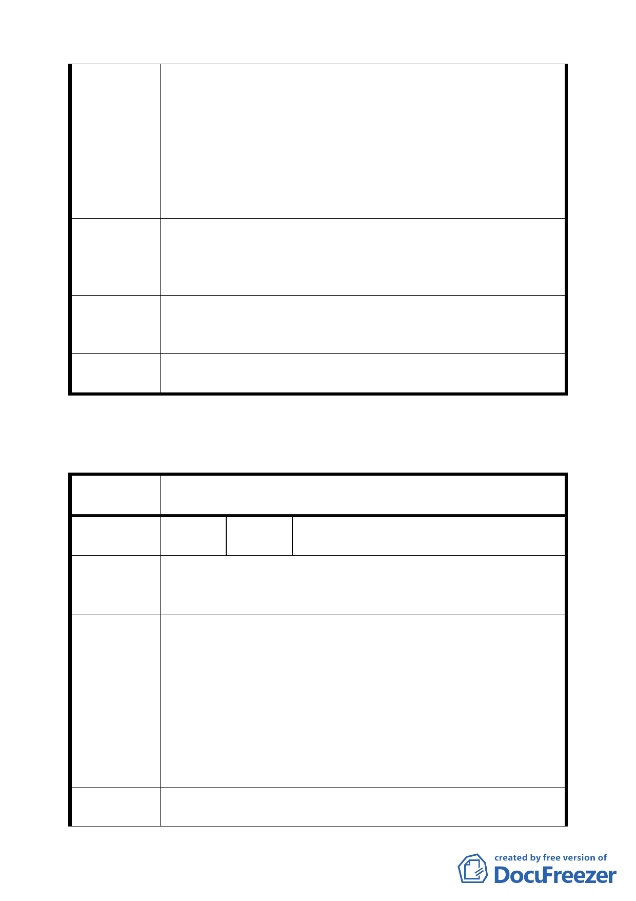

理由所述，全部都應變更為住宅區，否則獨厚財團，有
失公平正義。
三、因變更而應捐贈之土地，以捐獻代金折算並不合理（雖
然合法），因為不公平！回饋非給當地，當地很難有機會
受益！且不合理，以公告現值加四成，難免圖利之嫌，
更應避免。
四、建情併該案，應將內湖路北側北勢湖工業區一併檢討，
完全相同的理由，都應一起變更為住宅區。
一、該基地週邊地區就應如變更理由所述，全部都應變更為
建議辦法
住宅區。
二、因變更而應捐贈之土地，以捐獻代金折算並不合理（雖
然合法），回饋非給當地，當地很難有機會受益！
專案小組
審查結論
一、有關北勢湖工業區市府已另案辦理都市計畫相關程序。
二、有關捐贈土地以捐獻代金折算部分，將由市府與開發單
位協議處理。
委
決
員
會
議
依專案小組審查結論辦理。
臺北市都市計畫委員會公民或團體所提意見綜理表
案
名
擬定臺北市內湖區西湖段 1 小段 256、272、276 等 3 筆地號
住宅區細部計畫案
編
號
１
陳情人
馬興華先生
王興國先生
（西湖美人社區管委會）
西康里里長
據知該建地，原係沼澤地，土地較鬆軟，若建構時，恐造成鄰
陳 情 理 由 近建築物之傷害危險，尤其以本社區最為接近，且僅本社區為
住三區。
一、若確有必需變更之理由，建議將停車場上方設置綠化公園。
二、若確有必需變更，建議考量將停車場位置移向西湖國中
側，並仍於上方設置綠化公園。
三、日後所興建之停車場，其出入口請勿設在本社區前之巷道
建 議 辦 法 上（內湖環山路 1 段 24 巷），以策安全。
四、基於建築物之公共危險與安全性、隱私權、陽光權等，建
議建築物實體與本社區增加棟距，如加大公設或綠地等。
五、建構前後及興建期間對本社區有所傷害，是否可事前明訂
處理與賠償方式，以有所依據。
專 案 小 組 有關捐贈之公共設施用地仍劃設為停車場用地，地面維持永久
審 查 結 論 性公園化使用，地下興建一層停車場；有關停車場出入口及施
一二